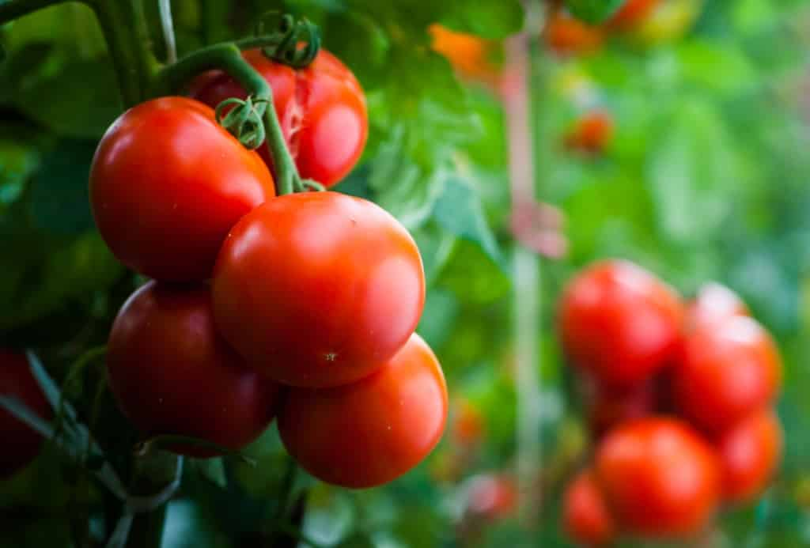

25 de julho: Dia Internacional da Agricultura Familiar.
Ler sobre em.
https://www.gov.br/mda/pt-br/noticias/2024/07/25-de-julho-dia-internacional-da-agricultura-familiar
Com 103 anos desde sua fundação, a cidade de Reserva, "a capital do tomate" une gerações com mais de 18 pés de tomate.
